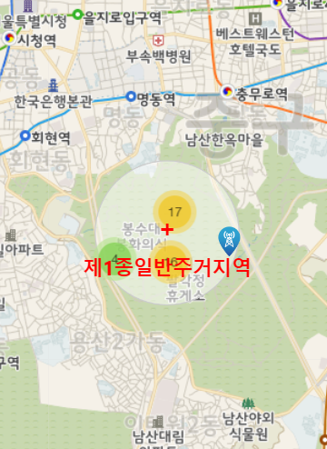

아카데미
주파수
무선국
전파LAB
전파한마당
지역별 주파수 찾기
검색조건 접기
방송사 채널 선택
방송사
MBC
채널
MBC 표준FM
경로검색
고속도로
영동고속도로
현재 위치 :서울특별시 중구 예장동
일반지도
위성지도
고속도로 경로 검색
강남구
안성시
천안시 서북구
대덕구
대덕구
김천시
경주시
양산시
93.1 MHz
100.3 MHz
94.1 MHz
102.1 MHz
98.5 MHz
89.7 MHz
101.9 MHz
92.7 MHz

지역별 주파수
88.1 MHz
89.1 MHz
89.3 MHz
89.5 MHz
89.7 MHz
91.1 MHz
92.1 MHz
92.3 MHz
92.7 MHz
93.1 MHz
93.5 MHz
93.9 MHz
94.1 MHz
94.5 MHz
96.3 MHz
97.3 MHz
98.3 MHz
98.5 MHz
100.3 MHz
100.7 MHz
101.9 MHz
102.1 MHz
104.5 MHz